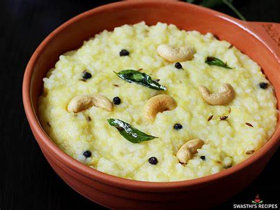

Ingredients:
- 1 cup rice
- 1/4 cup moong dal (yellow split lentils)
- 1/4 tsp black pepper
- 1/4 tsp ginger (grated or chopped)
- 1-2 green chilies (chopped)
- 1 tbsp ghee (clarified butter)
- 1/4 tsp cumin seeds
- 1/4 tsp mustard seeds
- 2 tbsp cashews
- 2 tbsp grated coconut (optional)
- Fresh curry leaves (optional)
- Salt to taste
Instructions:
- Wash the rice and moong dal thoroughly and drain the water.
- In a pressure cooker, add the rice, moong dal, and about 3 cups of water. Cook for 3-4 whistles (or until the rice and dal are soft and mushy).
- Once done, turn off the heat and let the pressure release naturally. Open the lid and stir the cooked rice and dal mixture.
- In a separate pan, heat the ghee over medium heat. Add mustard seeds and let them splutter.
- Add cumin seeds, cashews, green chilies, ginger, and curry leaves (if using). Sauté for 2-3 minutes until the cashews turn golden brown.
- Pour this tempering over the cooked rice and dal mixture. Add salt and black pepper to taste.
- If you like, add grated coconut and stir well to combine.
- Serve hot, garnished with additional curry leaves or cashews if desired.